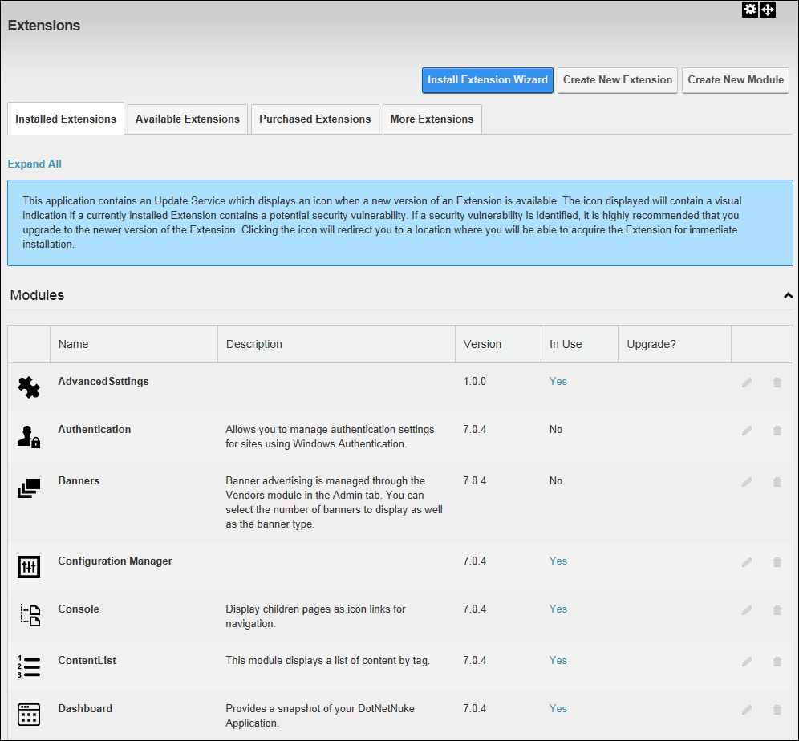

The Host >  Extensions module enables SuperUsers to purchase, install and manage extensions, as well as allocate extensions to other sites. Note: This section of the manual only covers tasks that can be performed by SuperUsers.
Extensions module enables SuperUsers to purchase, install and manage extensions, as well as allocate extensions to other sites. Note: This section of the manual only covers tasks that can be performed by SuperUsers.
Important. The Extensions module located on the Host page is a different module to the one located beneath the Admin page, therefore SuperUsers must use the Host Extensions module to perform Host level tasks such as purchasing extensions.
